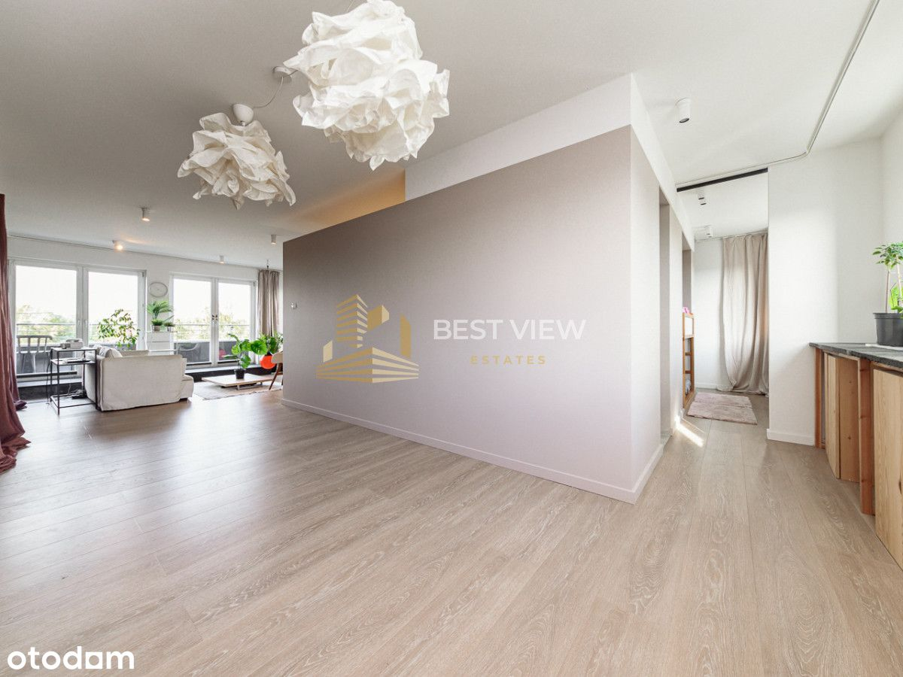
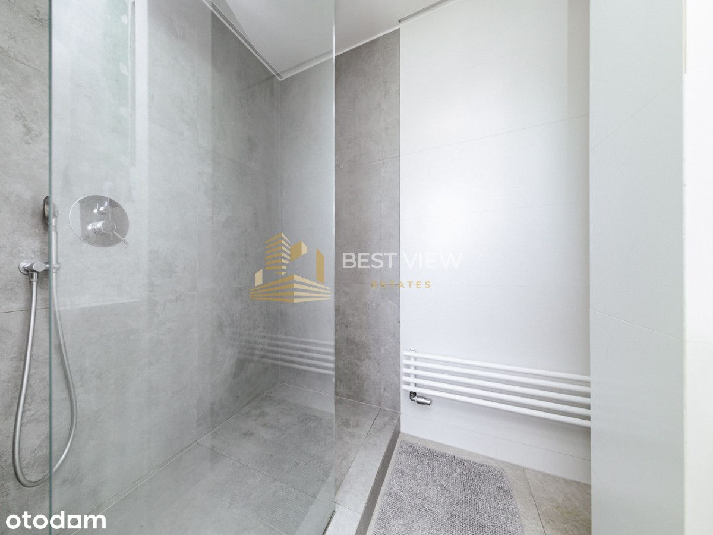
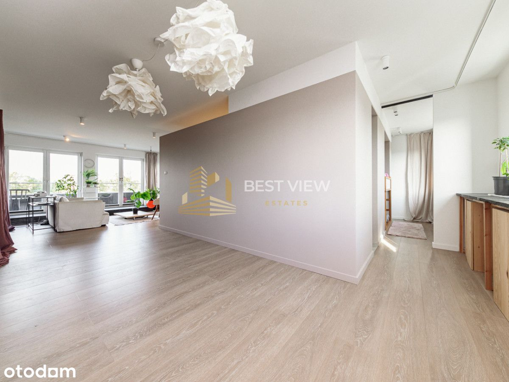
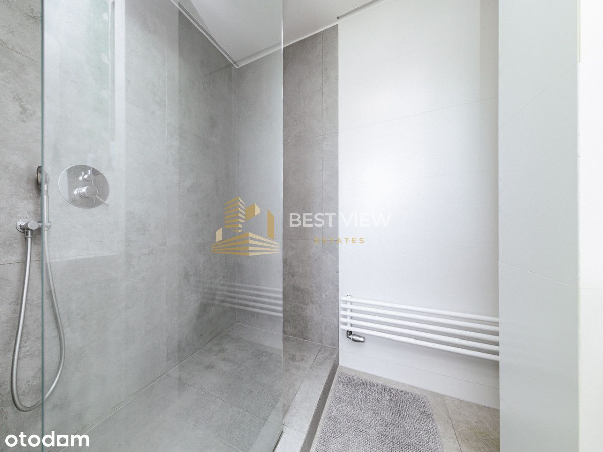
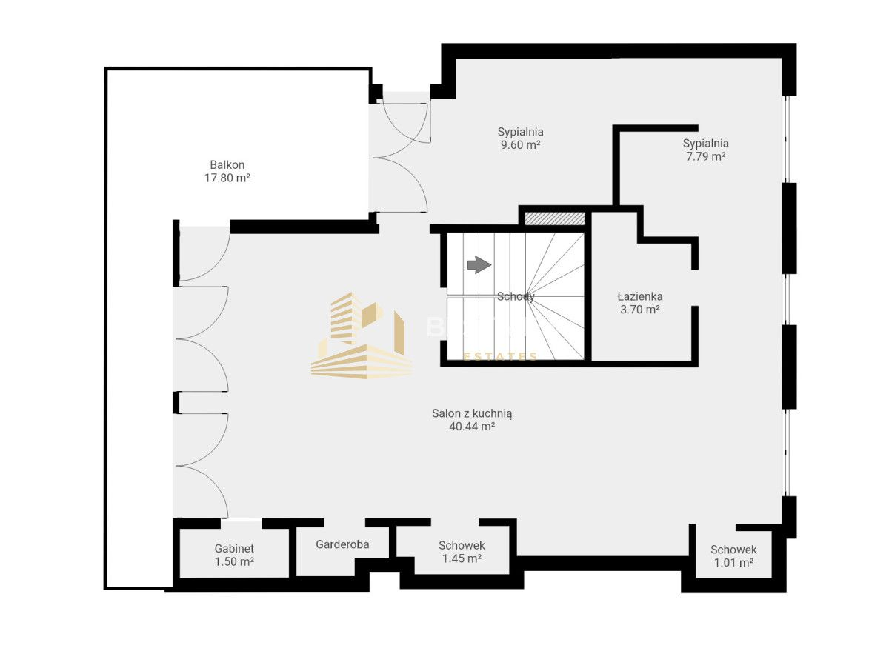
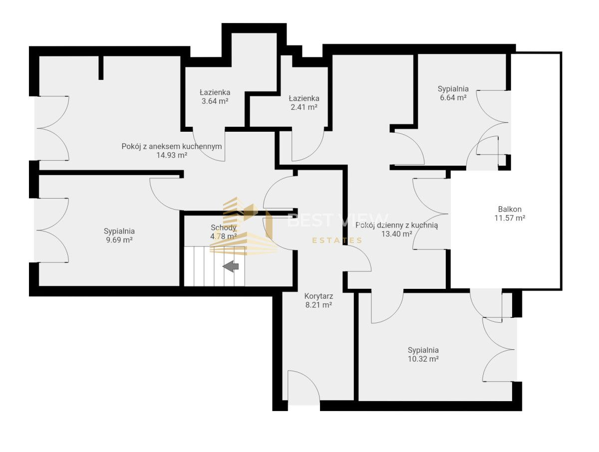
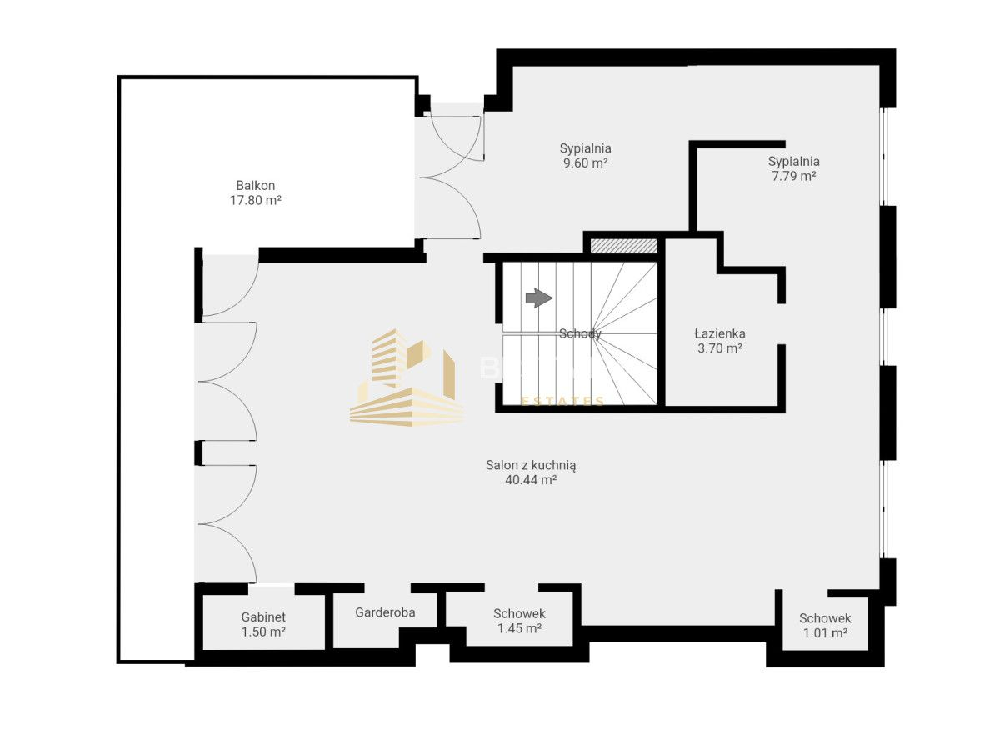
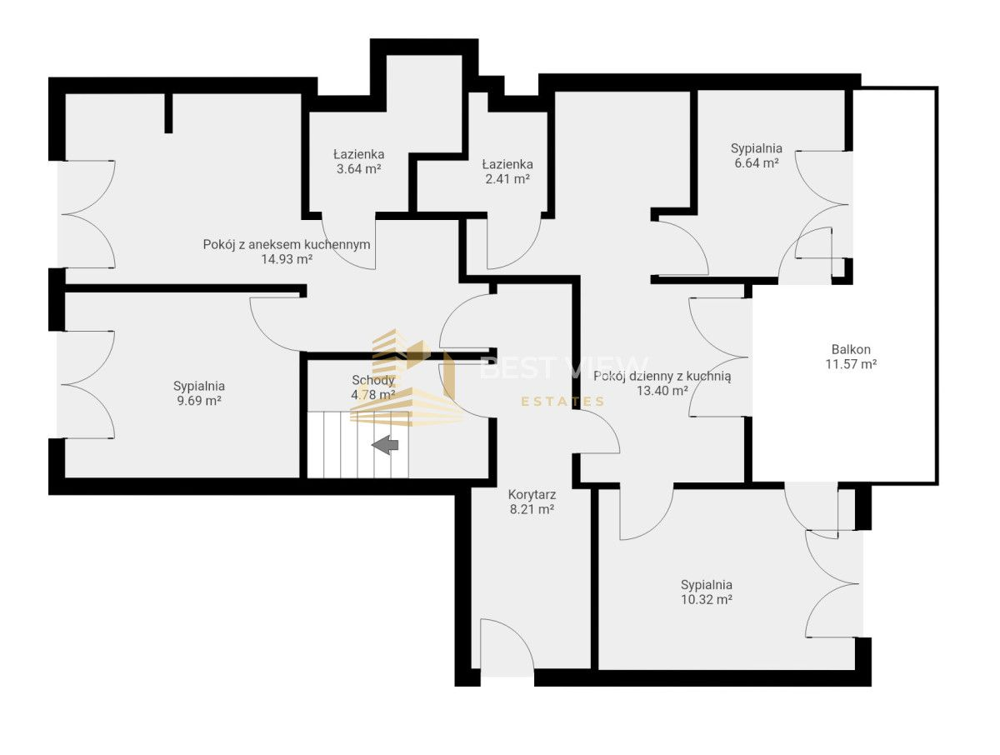

Mam przyjemność zaprezentować Państwu dwupoziomowy dwustronny apartament z trzema gotowymi mieszkaniami o powierzchni 150 m2 idealna przestrzeń dla Inwestora.
ROI - w skali 7,5-8%
Apartament:
• Dwupoziomowy z wewnętrzną klatką schodową na trzecim i czwartym piętrze
• 3 podliczniki
• Apartament 1 - 2-pokoje 29 m2 (2200 - 2500 zł za wynajem)
• Apartament 2 - 3-pokoje 33 m2 (2500 zł - 3000 zł za wynajem)
• Apartament 3 - open space 80 m2 (3500 - 4000 zł za wynajem)
• Do mieszkania przynależy miejsce parkingowe - 40 000 zł (500 zł wynajem)
• Wszystkie apartamenty wykończone - przystosowane pod wynajem
• Aparatment 2 -taras 12 m2 (Z widokiem na zieleń)
• Apartament 3 - taras 18 m2 (Z widokiem na zieleń)
• Dwustronne (Wschód / Zachód)
Lokalizacja:
• Sklep spożywczy (Żabka) - 400 m
• Plac zabaw - 100 m
• Przystanek autobusowy (Zycha) - 300 m
• Biedronka - 1 km
• Szkoły Podstawowe - 850 m
• Żłobek, przedszkole- 800 m
• Las Rembertowski - 1,6 km
• Przychodnia - 2 km
• Droga ekspresowa s8 - 4 km
• Druga linia metra (Trocka) - 4,5 km.
• Centrum Handlowe (M1 Marki) - 4,3 km.
• Stacja kolejowa (Wilno) - 2,4 km
Budynek
• Zielone osiedle „Garden Plaza”
• Brak windy
• Niska kameralna 4-piętrowa zabudowa
• Rok budowy 2011
• Ogrodzone
• Monitorowane
• Garaż podziemny
Układ:
1. Kondygnacja
Korytarz - 8,21 m2
2-pokojowy apartament (29m2)
Pokój z aneksem kuchennym - 14,93 m2
Sypialnia - 9,69 m2
Łazienka - 3,64 m2
3-pokojowy lokal (33 m2)
Pokój z aneksem kuchennym - 13,40 m2
Sypialnia - 6,64 m2
Sypialnia 2 - 10,32 m2
Łazienka - 2,41 m2
Balkon - 11,57 m2
2. Kondygnacja
• Salon z aneksem kuchennym - 40,44 m2
• Sypialnia - 9,60 m2
• Sypialnia 2 - 7,79 m2
• Łazienka - 3,70 m2
• Gabinet - 1,50 m2
• Garderoba - 1,50 m2
• Pralnia - 1,45 m2
• Spiżarnia - 1,01 m2
• Taras - 17,80 m2
Warunki transakcji:
• Pełna własność
• Uregulowane grunty,
• Możliwość zakupu na kredyt
Jeśli zakup tej nieruchomości wiąże się ze sprzedażą innej - daj mi znać! Chętnie pomogę Ci przejść przez ten proces.
 

 
